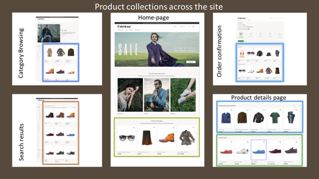

Produktsammelmodule
Important
Dynamics 365 Retail ist jetzt Dynamics 365 Commerce und bietet umfassende Handelsfunktionen für alle Kanäle – von E-Commerce über Shops bis hin zu Callcentern. Weitere Informationen zu diesen Änderungen finden Sie unter Microsoft Dynamics 365 Commerce.
Dieses Thema bietet eine Übersicht über Produktsammelmodule in Microsoft Dynamics 365 Commerce.
Übersicht
Die Produkterfassung ist ein wichtiges Tool, mit dem Einzelhändler ihre Kunden auf einer E-Commerce-Website ansprechen können. Produktsammelmodule helfen Einzelhändlern dabei, überzeugende Einkaufserlebnisse zu schaffen, indem sie eine intuitive visuelle Oberfläche bereitstellen, mit der Produktsammlungen schnell erstellt werden können.
Produktsammelmodule stellen physische Produkte und Dienstleistungen auf der Website dar. Ein Produktsammelmodul ist in der Regel mit einer Detailseite verknüpft, auf der Kunden ein Produkt oder eine Dienstleistung erwerben oder mehr darüber erfahren können.
Die Quelle für Produktsammlungen kann eine der vier folgenden Listentypen sein:
- Redaktionelle Listen von Produkten, die manuell in Dynamics 365 Commerce als zugehörige Produkte für ein Produkt definiert wurden, oder Produktlisten
- Algorithmische Listen, z. B. Listen mit neuen, meistverkauften oder beliebten Produkten
- Empfehlungslisten, die auf maschinellem Lernen basieren
- Personalisierungslisten, die personalisierte Ergebnisse für einen Kunden unterstützen. Kunden müssen auf der E-Commerce-Website angemeldet sein, um personalisierte Ergebnisse zu erhalten. Gastbenutzer sehen keine personalisierten Ergebnisse. Kunden können sich von der Personalisierung abmelden Kontoverwaltungsseite.
Die folgende Abbildung zeigt die verschiedenen Arten von Produktsammlungen, die auf einer E-Commerce-Site verwendet werden.

Note
Verwenden Sie immer Produktsammelmodule, um eine Gruppe von Produkten eines ähnlichen Typs anzuzeigen.
Produktsammelmodule und -typen
In der folgenden Tabelle werden verschiedene Arten von Produktsammelmodulen in Dynamics 365 Commerce beschrieben.
| Produktsammelmodul | Typ | Beschreibung |
|---|---|---|
| Kategorie | Kategorie | In diesem Modul wird eine Liste der Produkte in einer Kategorie angezeigt, die durch die Navigationskategoriehierarchie definiert ist, die der Einzelhändler für einen Kanal erstellt hat. |
| Zugehörige Produkte | Redaktion | Diese Art eines Produktsammelmoduls zeigt eine Liste der Produkte an, die ein Manager Verkaufsförderung für den vom Autor ausgewählten Relationstyp als verwandte Produkte in Commerce konfiguriert hat. |
| Suchergebnisse | Suchabfrage | Diese Art eines Produktsammelmoduls zeigt eine Liste der Produkte an, die der vom Kunden eingegebenen Suchanfrage am besten entsprechen. |
| Kuratierte Produktlisten | Redaktion | Dieses Modul zeigt eine benutzerdefinierte Liste, die Merchandiser und Redakteure in Commerce erstellt haben. |
| Neue | Algorithmisch | Dieses Modul zeigt eine Liste der neuesten Produkte, die nach Kanälen und Katalogen sortiert wurden. Diese Liste kann personalisierte Ergebnisse für einen angemeldeten Benutzer anzeigen, wenn der Site-Autor diese Option auswählt. |
| Bestseller | Algorithmisch | Dieses Modul zeigt eine Liste der Produkte, die nach der höchsten Anzahl an Verkäufen sortiert sind. Diese Liste kann personalisierte Ergebnisse für einen angemeldeten Benutzer anzeigen, wenn der Site-Autor diese Option auswählt. |
| Populär | Algorithmisch | Dieses Modul zeigt eine Liste der leistungsstärksten Produkte für einen bestimmten Zeitraum. Diese Liste kann personalisierte Ergebnisse für einen angemeldeten Benutzer anzeigen, wenn der Site-Autor diese Option auswählt. |
| Wird häufig zusammen gekauft | Künstliche Intelligenz/Maschinelles Lernen | Dieses Modul verwendet maschinelles Lernen, um Kaufmuster von Verbrauchern zu analysieren und verwandte Artikel zu empfehlen, die häufig zusammen mit einem bestimmten Produkt gekauft werden. Diese Liste kann personalisierte Ergebnisse für einen angemeldeten Benutzer anzeigen, wenn der Site-Autor diese Option auswählt. |
| Personen gefällt auch | Künstliche Intelligenz/Maschinelles Lernen | Dieses Modul verwendet maschinelles Lernen, um Kaufmuster von Verbrauchern zu analysieren und verwandte Artikel zu empfehlen, die sich auf ein bestimmtes Produkt beziehen. Diese Liste kann personalisierte Ergebnisse für einen angemeldeten Benutzer anzeigen, wenn der Site-Autor diese Option auswählt. |
| Entnahmen für Sie | Künstliche Intelligenz/Maschinelles Lernen | Dieses Modul verwendet maschinelles Lernen, um die Kaufmuster des angemeldeten Benutzers zu analysieren und personalisierte Empfehlungen bereitzustellen, die auf diesen Kaufmustern basieren. Für einen Gastbenutzer wird diese Liste reduziert. |
Hinzufügen eines Produktsammelmoduls zu einer Kategorieseite
Befolgen Sie diese Schritte, um ein Produktsammelmodul zu einer Kategorieseite hinzuzufügen.
- Wechseln Sie zu Seiten, und wählen Sie dann Neu aus, um eine neue Seite zu erstellen.
- In dem Dialogfeld Wählen Sie eine Vorlage wählen Sie die gleiche Vorlage, wie jene, die von Ihrer Standardkategorieseite verwendet wird. Unter Seitenname geben Sie einen entsprechenden Namen ein und wählen dann OK.
- Wählen Sie im Slot Unterfußzeile die Ellipsen-Schaltfläche (...) und wählen Sie Modul hinzufügen.
- Wählen Sie im Dialogfeld Modul hinzufügen wählen Sie das Modul Container und dann OK aus.
- Wählen Sie im Slot Container die Ellipsen-Schaltfläche (...) und wählen Sie Modul hinzufügen.
- Im Dialogfeld Modul hinzufügen wählen Sie das Produktsammlungsmodul und wählen Sie dann OK.
- Wählen Sie im Eigenschaftenbereich für das Produktsammelmodul Produktliste hinzufügen aus.
- Wählen Sie im Dialogfeld Produktlistenkonfiguration auswählen den Typ der Liste, den Listenursprung aus und geben Sie die Anzahl der Artikel ein. Konfigurieren Sie alle anderen Optionen, die für den Listentyp verfügbar sind. Weitere Informationen zu Listentypen finden Sie in der folgenden Tabelle.
- Wählen Sie OK.
- Wählen Speichern und dann Vorschau aus, um eine Vorschau der Seite anzuzeigen.
- Wählen Bearbeiten beenden, um die Seite einzuchecken, und wählen Sie dann Veröffentlichen, um sie zu veröffentlichen.
In der folgenden Tabelle sind die Listentypen aufgeführt, die im Dialogfeld Produktlistenkonfiguration auswählen verfügbar sind.
| Typ | Beschreibung | Nutzung | Seitenkontext | Spezifischer Kontext | Personalisierung |
|---|---|---|---|---|---|
| Produkte nach Kategorie | Eine Liste von Produkten, die zu einer bestimmten Kategorie gehören. Diese Kategorie wird entweder über den Seitenkontext oder über dem vom Autor bereitgestellten Kontext bestimmt. | Diese Art von Liste kann auf jeder Seite verwendet werden (z. B. einer Homepage, Kategorieseite, Marketing-Seite oder Produktdetailseite [PDP]), um eine bestimmte Produktkategorie zu fördern. | Kategorie aus dem Seitenkontext, sofern verfügbar (z. B. eine Kategorieseite) | Der Autor kann eine bestimmte Kategorie als Kontext für die Liste angeben. | Nicht zutreffend |
| Zugehörige Produkte | Eine Liste der Produkte, die ein Manager Verkaufsförderung als verwandte Produkte in Commerce für den Relationstyp konfiguriert hat. | Diese Art von Liste wird hauptsächlich auf PDPs verwendet, kann jedoch auf jeder Seite verwendet werden, wenn ein übergeordnetes Produkt bereitgestellt wird. | Produkt von der Seite, Beziehungstyp (obligatorisch) | Das Produkt kann im Picker ausgewählt werden und der Beziehungstyp wird verwendet. | Nicht zutreffend |
| Zusammengestellt | Eine benutzerdefinierte Liste, die Merchandiser und Redakteure in Commerce erstellt haben. | Erweitern von Kategorieseiten, Startseiten, Auscheck- und Einkaufskorbseiten sowie Produktseiten | Nicht zutreffend | Nicht zutreffend | Nicht zutreffend |
| Algorithmisch |
|
Startseite, Kategorieseite und Bezahl- und Warenkorbseiten erweitern | Kategorie aus dem Seitenkontext (z. B. eine Kategorieseite) | Die vom Site-Autor festgelegte Kategorie | Unterstützt |
| Wird häufig zusammen gekauft | Eine Liste, die maschinelles Lernen verwendet, um Kaufmuster von Verbrauchern zu analysieren und verwandte Artikel zu empfehlen, die häufig zusammen mit einem bestimmten Produkt gekauft werden. | Diese Art von Liste gilt nur für die Warenkorbseite. | Einkaufskorb | Nicht zutreffend | Unterstützt |
| Personen gefällt auch | Eine Liste, die maschinelles Lernen verwendet, um Kaufmuster von Verbrauchern zu analysieren und verwandte Artikel zu empfehlen, die sich auf ein bestimmtes Produkt beziehen. | Diese Art von Liste wird auf PDPs verwendet, um Produkte anzuzeigen, die andere Kunden gekauft haben. | Produktkontext von der Seite | Das vom Site-Autor bereitgestellte Produkt | Unterstützt |
| Entnahmen für Sie | Eine Liste, die maschinelles Lernen verwendet, um Kundenpräferenzen zu ermitteln. | Diese Art von Liste kann auf jeder Seite verwendet werden. | Nicht zutreffend | Nicht zutreffend | Unterstützt |
Zusätzliche Ressourcen
Übersicht über die Modulbibliothek